Social Science
Part 1
Standard VI
Government of Kerala
Department of General Education
Prepared by
State Council of Educational Research and Training (SCERT) Kerala
2025
Page 1
Page 2
THE NATIONAL ANTHEM
Jana-gana-mana adhinayaka, jaya he
Bharatha-bhagya-vidhata
Punjab-Sindh-Gujarat-Maratha
Dravida-Utkala-Banga
Vindhya-Himachala-Yamuna-Ganga
Uchchala-Jaladhi-taranga
Tava subha name jage,
Tava subha asisa mage,
Gahe tava jaya gatha
Jana-gana-mangala-dayaka jaya he
Bharatha-bhagya-vidhata
Jaya he, jaya he, jaya he,
Jaya jaya jaya, jaya he.
Prepared by
State Council of Educational Research and Training (SCERT)
Poojappura, Thiruvananthapuram 695012, Kerala
Website : www.scertkerala.gov.in, e-mail : scertkerala@gmail.com
Typeset and design by : SCERT
First Edition - 2025
Printed at : KBPS, Kakkanad, Kochi-30
© Department of General Education, Government of Kerala
Social Science
6
PLEDGE
India is my country. All Indians are my brothers and
sisters.
I love my country, and I am proud of its rich and
varied heritage. I shall always strive to be worthy of it.
I shall give my parents, teachers and all
elders, respect and treat everyone with courtesy.
To my country and my people, I pledge my devotion.
In their well-being and prosperity alone, lies my
happiness.
Page 3

Dear Friends,
This is the first part of the Social Science textbook for Class VI, which includes seven
units. The textbook has been designed to provide a comprehensive understanding
of the socio-cultural life humans have been leading since their origin.
The textbook begins by exploring the emergence of human beings on Earth and
cultural life that followed. Early states and the various philosophies that have
influenced human societies are then discussed. The unit 'State and Government'
explains the concept of the state and its elements. The lesson 'From the Globe
to the Map' introduces basic concepts related to the globe. Various methods of
cartography are also discussed in this unit. The unit 'Culture and Cultural Diversities'
discusses how culture is formed and its characteristics. The unit 'From Agriculture
to Industry' describes the transition from agricultural production to industrial
production. The unit 'Through the Continents' would help in knowing about the
continents and their diversity.
Based on the Social Science approach outlined in the Kerala Curriculum Framework
2023, this textbook aims to contribute to the analysis of social phenomena. This
book will also help students realise the growth and development of humankind
across various fields, construction of knowledge and insight along the way.
Dr. Jayaprakash R. K.
Director
SCERT Kerala
Page 4
Dr. Manju Sankar K.
Research Officer, SCERT KERALA
Dr. Abhilash Kumar K. G.
Assistant Professor
Department of Political Science,
B.J.M. Govt. College Chavara, Kollam
Dr. Nandakumar B. V.
Assistant Professor
Department of History,
Sree Narayana College, Kollam
Dr. Antony Palakkal
Professor & Head (Retd.)
Department of Sociology,
University of Kerala
State Council of Educational Research and Training (SCERT)
VidyaBhavan, Poojapura, Thiruvananthapuram 695 012
Textbook Development Team
Dr. K. N. Ganesh
Chairman,
Kerala Council for Historical Research
Advisor
Chairperson
Experts
English Translation
Dr. Anjana V.R. Chandran, Research Officer, SCERT Kerala
Beena S. Nair, UPST, GGHSS, Malayinkeezhu, Thiruvananthapuram
Anil Kumar K., Headmaster, GHS Kandala, Thiruvananthapuram
Priya S. S., P.D. Teacher, UPST.GGHSS Cottonhill, Thiruvananthapuram
Ramdev P. R., HSST Geography, GHSS, Vellathuval, Idukki
Nisha T. S., UPST SNVUPS, Marutamanpally, Kollam
Pushpangadan U, UPST (Retd.) GHSS Anchal (West) Punalur, Kollam
John K., UPST (Retd.) Govt. V & HSS, Parassala, Thiruvananthapuram
Rajan P.P., Trainer, BRC, Malappuram
Participants
Academic Coordinator
Dr. Deepa Prasad L, Associate Professor of English, University College, Thiruvananthapuram
Smita John, Assistant Professor of English, Government Law College, Thiruvananthapuram
Reshmi Reghunath, HSST, Govt.V&HSS for Girls, Manacadu, Thiruvananthapuram
Ananthi M., HSST English, GHSS, Vilavoorkal, Malayam, Thiruvananthapuram
Aruna J. P., HSST English, GHSS Pullengode, Malappuram
Arun R., Assistant Professor of English, UIT Kallara, Nedumangad, Thiruvananthapuram
Ghanasyam M, Assistant Professor of English, UIT Kallara, Nedumangad, Thiruvananthapuram
Dhanya R., HSST English, GHSS Kuthuparamba, Kannur
Jinju Gomez, HSST English, SMV Govt Model HSS, Thiruvananthapuram
Page 5


CONTENT
Some symbols are used in this book
for the ease of study
Extended reading
(not subject to assessment)
ICT
Let's make
Role play
Extended activities
Activity
Let's discuss
1
Early Humans and Civilizations............... 7-22
2
Early States......................................... 23-36
3
State and Government....................... 37-47
4
From the Globe to the Map................ 48-59
5
Culture and Cultural Diversities........ 60-74
6
From Agriculture to Industry.............. 75-86
7
Through the Continents... ............ 87-102
Placard making
Let's write
Page 6

Page 7

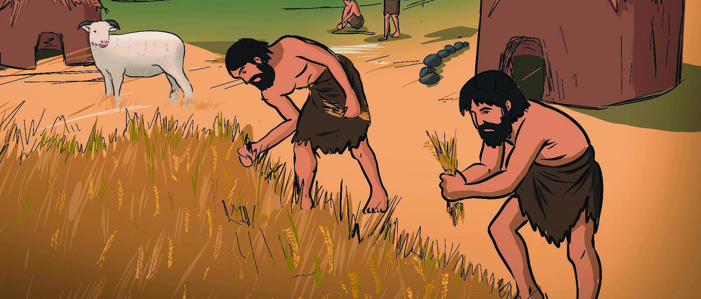
What you have read is a passage from Jawaharlal Nehru's book, "Letters from a Father
to His Daughter".
What is the historical remain that Jawaharlal Nehru mentions here?
•
According to him, where was it obtained from?
•
This historical remain of the primitive humans is estimated to be lakhs of years old.
Probably the first men were
hardly men like we know them
today. They must have been half
apes, half men, living rather
like monkeys. Do you remember
going with us to see a professor
in Heidelberg in Germany? He
showed us a little museum full
of fossils and especially an old
skull which he kept carefully
locked up in a safe. The skull
was supposed to belong to one of
these earliest men. We now call
him the Heidelberg man, simply
because the skull was found
buried near Heidelberg.
'Letters from a Father to His Daughter'
Letters from a Father to His Daughter'
by Jawaharlal Nehru
by Jawaharlal Nehru
1
Early Humans and Civilizations
Page 8


Social Science Class VI
Social Science Class VI
8
Part I
Can you think of people who lived all these years ago or about that period?
Shall we take a look at the history of people at that time?
Let's Trace our Ancestors
Look at the family tree that Sinu prepared including members of his family's previous
generations.
BCE and CE
Chronologically, history is divided into two periods - Before Common Era
(BCE) and Common Era (CE). Based on the birth of Jesus Christ, earlier
it was divided into BC and AD. The period before the birth of Christ was
known as BC (Before Christ) and the period after the birth of Christ was
known as AD (Anno Domini). These days, it is known as BCE and CE
respectively.
Fig 1.1
In this way, details of how
many generations of your
family can you find?
If we can go back thousands of
generations like this, we can
reach the early humans.
Page 9


9
Social Science Class VI
Social Science Class VI
Early Humans and Civilizations
Fossils
Fossils are the remains of ancient
plants, animals and humans.
These are generally embedded in
rocks and have been preserved for
millions of years.
BCE
BCE
CE
CE
Origin and Evolution of Humans
Human fossils are important sources that help us
to learn about the history of early humans. It is by
scientifically calculating the age of such fossils that
the history of the origin and evolution of humans
is written.
Human Evolution
It was Charles Darwin who proposed a scientific
view on the origin of human beings. He suggested
that humans have originated through organic changes that took place over a long period
of time. He called this process 'evolution'. He presented the Theory of Human Evolution
in his book 'On the Origin of Species', published in 1859.
Charles Darwin
Charles Darwin was born in England on February 12,
1809. He is a naturalist who helped in understanding the
processes that led to the origin of life on earth and the
diversity of living organisms. Charles Darwin explained
through his theory of evolution that all living species evolved
over a period of time and took millions of years to reach
its present form.
Charles Darwin
Charles Darwin
Ancestors of Humans
Early humans evolved millions of years ago. Human evolution began from primates, a
category of mammals. Observe the flowchart that includes the various stages of evolution.
500 400 300 200
100
1
1
100 200 300
400 500
A century denotes hundred years. A million years denotes ten lakh years.
A century denotes hundred years. A million years denotes ten lakh years.
Page 10

Social Science Class VI
Social Science Class VI
10
Part I
Homo habilis
The Tool makers
Homo sapiens
The wise or thinking man
Homo erectus
The Upright humans
Primates
A category of mammals
Hominoids
Walked on four legs
Hominids
Walked on two legs
Homo
Australopithecus
Palaeolithic Age
Stone Age
Prepare a note including the various stages of human evolution and their
characteristics.
You have seen from the flowchart that Homo habilis, Homo erectus and Homo sapiens
were the subgroups of Homo. The human species to which we belong is Homo sapiens.
Various Stages of Human Development
Early humans lived in the forests. They lived by gathering fruits and vegetables and hunting
animals to eat their meat. They used rough stones from their surroundings as weapons.
Since stones were used as weapons, this period is called the Stone Age. Based on the
development achieved over time in weapons and tools made of stones, the Stone Age
can be divided into three stages.
Mesolithic Age
Neolithic Age
Page 11

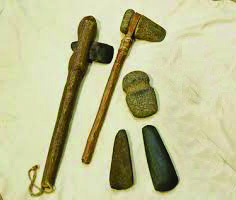
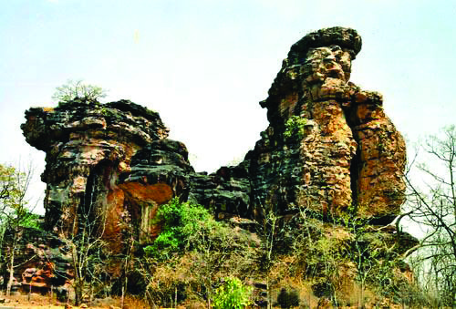
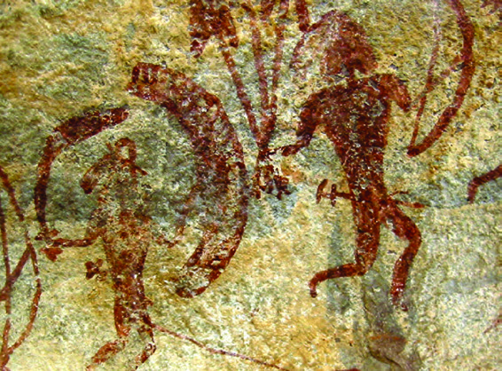

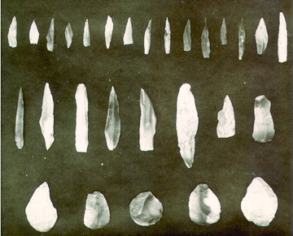
11
Social Science Class VI
Social Science Class VI
Early Humans and Civilizations
Fig 1.2
Fig 1.4
Fig 1.3
Mesolithic Age
Palaeolithic Age
Neolithic Age
First phase of stone age
Used more refined and polished stone tools
Used rough stones as tools
Agriculture started
Gathering and hunting as a means of livelihood
Invented wheel and started making pottery
Bhimbetka
Bhimbetka in Madhya Pradesh is an important rock shelter in India which
was inhabited by stone age humans. The paintings inside this cave tell us
about the varied ways of life of ancient humans. These cave paintings are
also a proof of their communication.
Bhimbetka
Bhimbetka
Cave paintings
Cave paintings
Note the characteristics of the various Stone Age periods.
Used smaller fine stone tools
Used edible grasses and fish as food
Animal skin, bark of trees and leaves used for clothing
Page 12

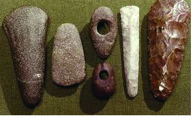


Social Science Class VI
Social Science Class VI
12
Part I
Write the characteristics of the Palaeolithic, Mesolithic and Neolithic periods
on strips and place them in a bowl. Arrange the charts with the names of
these Stone Age periods in the classroom. The children may pick the strips
from the bowl and paste them on the corresponding chart in the correct order.
Observe the pictures given above. What materials are they made of?
•
•
Fig 1.5
What all changes might settled life have brought about in humans?
From Stone to Metal
Fig 1.6
Beginning of Agriculture and Settled
Life
You have seen that agriculture began in the
Neolithic period. As humans started farming,
it became necessary for them to settle near
the farmlands. They settled near their farms
to maintain the crops, protect the fields from
wild animals and to care for their domesticated
animals.
Dwellings began to be built
Settlements gradually developed into villages
and urban centres
People began to interact more with each other,
and marked the beginning of organised social
life
Settled life
and changes
Page 13

13
Social Science Class VI
Social Science Class VI
Early Humans and Civilizations
Compare and prepare a note on the features of human life in the Stone Age
and the Bronze Age.
Do you know which was the first metal used by humans?
Copper was the first metal used by humans. The period when humans used weapons and
tools made of metals is called the Metal Age. Since copper was not strong enough for
tilling the soil and cutting trees, they mixed copper and tin to make a harder and stronger
alloy called bronze. The period when weapons and tools made of bronze were used is
known as the Bronze Age.
With the use of bronze tools, there occurred significant changes in human life. Let's see
what they were.
Bronze Age Civilizations
Egyptian
Harappan
Chinese
Mesopotamian
Bronze
Age
Civilizations
You have seen the changes that have occurred in
human life in the Bronze Age. As a result of these
changes, in the Bronze Age, civilizations were
formed centered around cities. Let us become
familiar with the Bronze age civilizations.
The use of
bronze and
changes in
human life
The centres of exchange later transformed into
towns and cities
Bronze tools helped in expanding agricultural land
The expansion of agricultural land led to an increase
in agricultural production
The increase in agricultural production paved the way
for the exchange of products and the development of
centres of exchange
Page 14

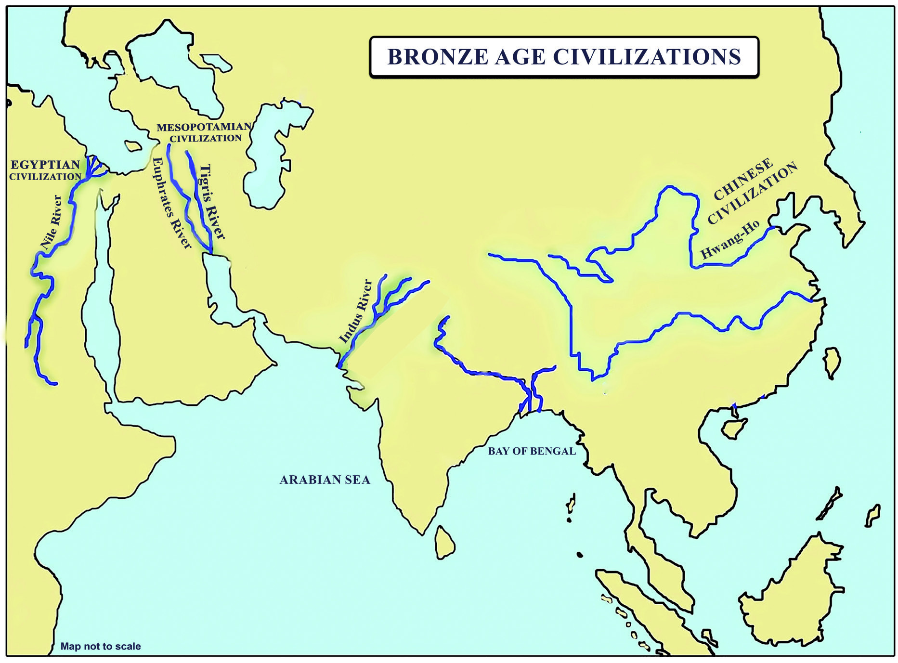
Social Science Class VI
Social Science Class VI
14
Part I
Observe Map 1.1 and identify the river valleys where the major Bronze Age
civilizations developed and complete the table.
Civilization
Rivers
Mesopotamian
Egyptian
Harappan
Chinese
Find out the four major civilizations that existed during the Bronze Age on the map given
below.
Map 1.1
HARAPPAN
CIVILIZATION
Page 15

15
Social Science Class VI
Social Science Class VI
Early Humans and Civilizations
Mesopotamian Civilization
Observe Map 1.1 and find the location of Mesopotamia.
Between which rivers is Mesopotamia located?
•
•
The word 'Mesopotamia' means 'the land between rivers'. This region lies between the
Euphrates and the Tigris rivers. This region is presently a part of Iraq. Mesopotamian
civilization consisted of four different civilizations which were Sumerian, Babylonian,
Assyrian, and Chaldean.
Urban Life and Art of Writing
The Sumerians were the first people who contributed to the development of urban life
in Mesopotamia. The major cities of Mesopotamian civilization were Ur, Uruk, Lagash,
and so on.
The writing system of the Mesopotamians was known as Cuneiform.
Fertile soil
Availability of water
Favourable climate
Why in river
valleys?
This script was developed by the Sumerians
Fig 1.7 - Cuneiform Script
Fig 1.7 - Cuneiform Script
It was a wedge shaped pictographic script
It was written on clay tablets
They used a pointed reed stylus to write on clay
tablets
Why did Bronze Age civilizations form in river valleys?
Page 16


Social Science Class VI
Social Science Class VI
16
Part I
Ziggurat
Ziggurat
Code of Hammurabi
This is a code of laws that existed during the reign of the
Babylonian ruler Hammurabi (1792-1750 BCE). It is
considered to be the oldest written code of law in the world.
The method of punishment of "an eye for an eye, a tooth for
a tooth" comes from this code.
Egyptian Civilization
Look at Map 1.1. Find the region where the Egyptian civilization flourished.
You have seen that the Egyptian civilization flourished in the Nile Valley. The main city
Prepare a note on the cultural contributions of the Mesopotamians.
Science and
Science and
Mathematics
Mathematics
• Lunar calendar
• Calculated the solar
and lunar eclipses
• Division and
Multiplication
Contributions of the Mesopotamians
Law
• Laws were codified
for the first time
during the reign of
Sumerian ruler Dungi
• The Code of Hamm-
urabi is the revised
form of these laws
Ziggurats
Places of worship of the Mesopotamians were
known as Ziggurats. These places of worship were
mainly built in cities. They were made of bricks.
The Ziggurat in the city of Ur is still preserved.
Page 17
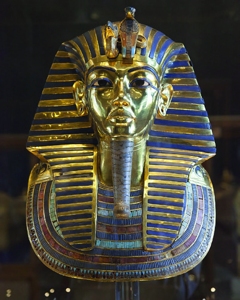


17
Social Science Class VI
Social Science Class VI
Early Humans and Civilizations
Fig 1.8
Fig 1.8
Egyptian Pharaoh
Egyptian Pharaoh
Mummy
Mummy
Pyramids
The pyramids which are the tombs of
the Pharaohs, are the main feature of
Egyptian civilization. The biggest and the
most famous is the Great Pyramid of Giza.
Mummies
The Egyptians had a system of preserving the dead body
by embalming it with perfumes. A body preserved in
this way is known as a 'mummy'. Among these the most
famous is the mummy of Pharaoh Tutankhamen. Such
mummies were kept inside the pyramids.
of the Egyptian civilization was Cairo. The Egyptian kings were
known as 'Pharaohs'. The main feature of the Egyptian civilization
is the pyramids.
Agriculture was the main livelihood of the people. Wheat, barley,
millet, fruits, flax, cotton, and so on grew abundantly in the Nile
river basin. This agricultural prosperity facilitated the development
of a civilization in the Nile Valley. Hence, Egypt is called the 'Gift
of the Nile'.
Hieroglyphics was the
script of the ancient
Egyptians
The word
Hieroglyphics means
'sacred writing'
This script was a
combination of signs
and letters
It is read from right to
left
Art of Writing
Writing existed in Egypt just as in Mesopotamia. Let us see what are the features of
Egyptian writing.
Hieroglyphics
Hieroglyphics
Script
Script
Page 18


Social Science Class VI
Social Science Class VI
18
Part I
How many months are there in the calendar we use now? Does each month
have thirty days? Look at the calendar at your home and find out how many
days are there in each month and write it down.
Fig 1.9 Chinese Script
Fig 1.9 Chinese Script
Find out the features of the writing system that existed in Mesopotamia, Egypt
and China and complete the table.
Civilization
Scripts
Features
Mesopotamia
............................. .............................
Egypt
............................. .............................
China
............................. .............................
Achievements in Science
Mathematics and Medical Science achieved significant advancement in Egypt. The Egyptians
laid the foundation of geometry in Mathematics. Addition and subtraction were their
contributions. Their solar calendar consisted of twelve months of thirty days each, and
an added five days to complete a year of 365 days.
Chinese Civilization
Chinese civilization originated along the banks of river Hwang-
Ho. Agriculture was the foundation of this civilization as well.
They were also experts in weaving, pottery, and silk production.
They made excellent bronze sculptures.
Writing system
The Chinese had a writing system since ancient times. The
pictographic script, that used pictures instead of letters, was
common. Gradually, they developed symbols to use in place
of pictures. That script still exists in China with modifications.
Harappan Civilization
The Harappan Civilization was a civilization that existed in the Indus Valley during the
Bronze Age. It is generally considered to have existed from about 2600 BCE to 1900
BCE. Harappa was the first city to be discovered. That is why this civilization is called
the Harappan Civilization. Since it emerged in the Indus Valley, it is also known as the
Page 19


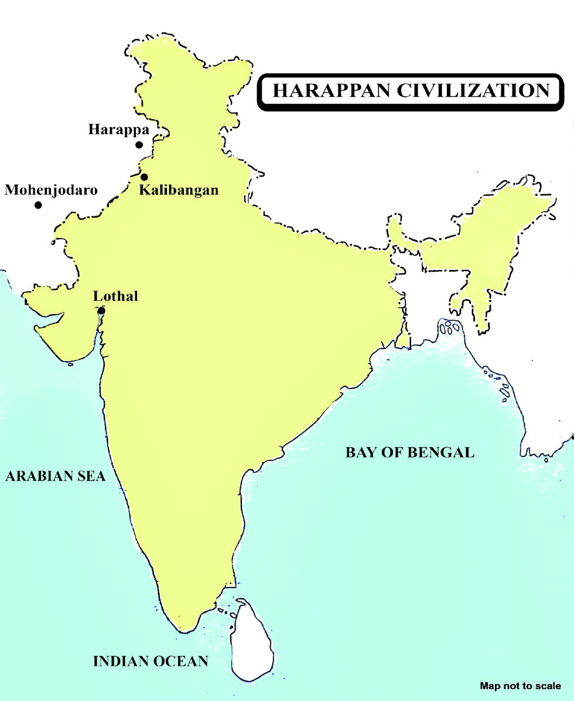

19
Social Science Class VI
Social Science Class VI
Early Humans and Civilizations
Sir John Marshall
'Archaeological Survey of
India' (ASI) is an
organisation formed
to carry out excavation
and
preservation
of
archaeological
materials in India. Sir
John Marshall was the
Director General of Archaeological
Survey of India from 1902 to 1928.
It was the research conducted under
his leadership that led to the discovery
of Harappan civilization.
Look at Map 1.2, find out and list the major cities of the Harappan civilization.
• Mohenjodaro
•
•
•
Indus Valley Civilization. This civilization
developed around urban centres.
Therefore, this civilization is termed as
the first urbanization in India.
Town Planning
The main feature of the Harappan civilization was town planning. They built houses on
both sides of the streets. They used burnt bricks for the purpose of construction. The
drainage system was another important feature of the Harappan civilization. The cities
and drains were planned in such a way that the waste water from the houses was drained
out of the city through the drains in the streets.
Great Bath of Mohenjodaro
Mohenjodaro was the major city of the Harappan civili
zation. The Great Bath is the most distinctive structure
of this city. There were flights of steps on both sides to
enter this tank and it had bathrooms. There was also
Fig. 1.10 Remains of the
Fig. 1.10 Remains of the
Great Bath
Great Bath
Map 1.2
Map 1.2
Page 20
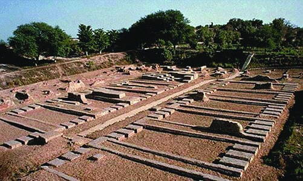
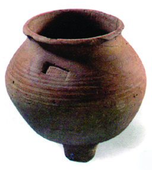
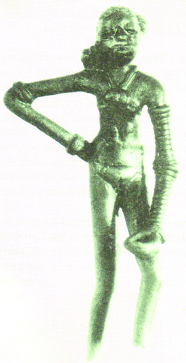
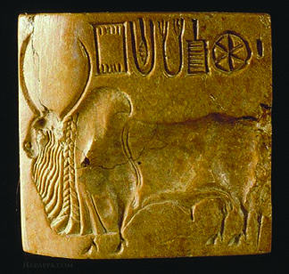
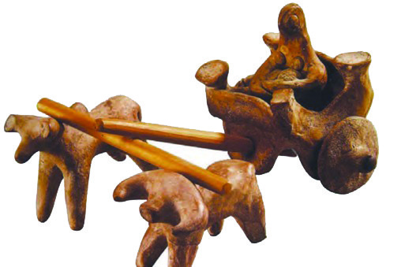

Social Science Class VI
Social Science Class VI
20
Part I
Fig 1.11 - Remains of a Granary
Fig 1.11 - Remains of a Granary
arrangement for filling fresh water and draining out waste water.
Granary
Agriculture was the main livelihood of the Harappan
people. Evidences of rice cultivation have been found
from sites like Rangpur and Lothal in Gujarat. The
granary is the most significant historical remain found
in Harappa. It was used to store and preserve grains.
Handicrafts
The Harappans were skilled in handicrafts. Observe the pictures given below.
..............................................................................
..............................................................................
Used to make toys
Used to make seals
..............................
.................................
Handicrafts of
the Harappans
Fig
Fig 1.12
1.12
Seals
Toys
Jewellery
Clay pot
Bronze statuette of a
Dancing Girl
What details about the handicraft of the Harappans can be obtained from these pictures?
Find out and complete the concept map.
Page 21

21
Social Science Class VI
Social Science Class VI
Early Humans and Civilizations
Fig 1.13
Fig 1.13
Necklaces, bracelets and earrings made of gold, silver, beads and shells were widely used.
They made seals from clay and stones. The toys, clay pots and bronze statues found in
Harappan cities all show the artistic skills of the Harappan people.
Art of Writing
Harappan people had their own writing system. They used symbols
instead of letters to write. Their art of writing is mostly found on seals.
Recording human history of ancient period is a very difficult and laborious task. Since no
written evidence is available we rely only on archaeological evidence, to learn about humans
and their lives in prehistoric times. Historians have recorded the history of humans since
the beginning by analyzing such archaeological evidences. While fossil remains provide
evidence of humans that evolved millions of years ago, stone weapons, tools, and cave
paintings tell us about people in the Stone Age. The beginning of agriculture and the
Climate
change
Deforestation
Frequent floods
Excessive use
of land
Decline of
Harappan
civilization
Decline of Harappan Civilization
Harappan cities faced decline around 1900 BCE. There are different opinions about the
decline of Harappan civilization. Let us examine some of them.
Page 22

Social Science Class VI
Social Science Class VI
22
Part I
development of settled life during the Neolithic period were milestones in human history.
The civilizations that emerged in different parts of the world during the Bronze Age reveal
the history of the achievements of humans during that period. It is the knowledge and
practices formed in ancient civilizations that laid the foundation for our culture. We can
use such reminders of the past as stepping stones for the future.
Extended Activities
• •
Prepare a picture album of the tools used by humans in different phases of
Stone Age.
• •
Collect more information on the topic "Bronze Age Civilizations and Human
Progress" and prepare a digital presentation.
Indicators
♦
i
Mesopotamian civilization
♦
i
Egyptian civilization
♦
i
Chinese civilization
♦
i
Harappan civilization
• •
Prepare a digital album by collecting pictures that showcase the features of
Bronze Age civilizations.
• •
Make a clay tablet, inscribe a script you know, allow it to dry and display it
in the Social Science Lab.
• •
Find out and prepare a list of major cities situated in river valleys.